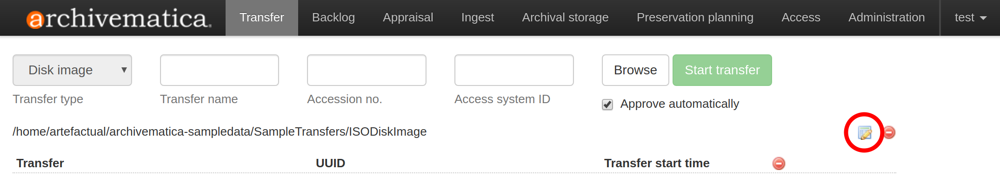
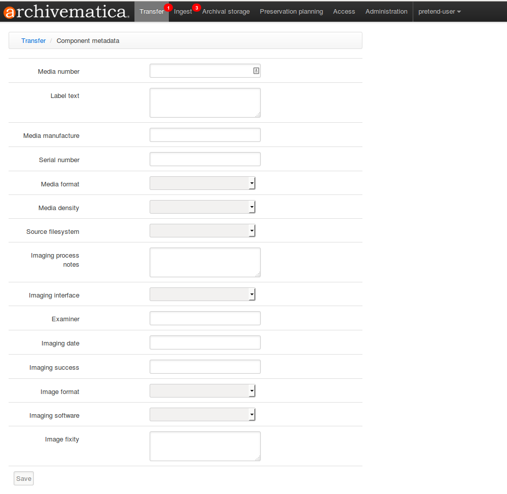

フォレンジックディスクイメージ¶
Archivematica は、フォレンジックディスクイメージの保存をサポートしています。ディスクイメージの保存には、ディスクイメージ転送タイプ（ ） を選択する必要はありません。ディスクイメージがバッグされている場合は、標準転送タイプまたはバッグ転送タイプを使用できます。ディスクイメージ転送タイプでは、ディスクイメージ固有のメタデータフォームが追加され、イ メージングプロセスに関する情報を記録できます。
このページ上
ワークフロー設定オプション¶
ディスクイメージを処理する場合、ダッシュボードの管理タブにある Archivematica の 処理設定 オプションを調整するとよいでしょう。
処理設定フィールドの詳細については、 フィールドとオプション を参照してください。
パッケージの抽出¶
Archivematica は、フォレンジック画像形式やZIPファイルのような圧縮されたコンテンツを含むパッケージからコンテンツを抽出するように設定できます。
しかし、ディスクイメージには何千ものシステムファイルが含まれていることが多く、Archivematica で処理する必要があるため、フォレンジックディスクイメージの内容を抽出すると、パフォーマンスに大きな問題が生じる可能性があります。その結果、エラーが発生する可能性があります。フォレンジックイメージのフォーマットを抽出しないことをお勧めします。これは、 Extract packages ジョブを"いいえ" に設定することで、処理設定で設定できます。
とにかくフォレンジックイメージフォーマットを抽出したい場合は、 パッケージの抽出 ジョブを "はい" に設定します。これを大規模にテストして、デプロイメントで実行可能なワークフローであることを確認することをお勧めします。抽出による処理負荷の軽減に役立つスケーラビリティオプションの 1 つは、抽出されたすべてのファイルに対して実行されるデフォルトの特性化ツールである FITS をオフにすることです。詳細については、[スケーラビリティ] のページにある 保存アクションルール を参照してください。
抽出後にパッケージを削除します¶
ファイルを抽出する場合、Archivematica は、元のパッケージを削除するように設定できます（パッケージのメタデータとログは保持されます）。これにより、作成されるAIPのスペースを節約することができます。元のパッケージを保持することもできます。
Archivematicaがフォレンジックイメージフォーマットを自動的に削除するには、 Delete packages after extraction ジョブを"はい" に設定します。抽出後もファイルを保持したい場合は、ジョブを"いいえ" に設定します。
内容検査¶
内容検査マイクロサービスは、 Bulk Extractor を実行します。これは、クレジットカード番号、社会保障番号、およびデータ内のその他のパターンを認識できるフォレンジックツールです。Bulk Extractorは、AIPに保存されるログを作成します。このログは、転送をバックログに送信し、 [分析]ペイン [鑑定]タブの[コンテンツの検査]機能を使用することで検査できます。
内容検査は、特に抽出されたフォレンジックディスクイメージのコンテンツに対して実行される場合、処理時間の増加につながる可能性があるもう 1 つのマイクロサービスです。コンテンツを抽出していない場合、ディスクイメージ自体は、Bulk Extractor から結果を生成しない可能性があります。
Bulk Extractor が実行されないように、 内容検査 ジョブを "いいえ" に設定することをお勧めします。フォレンジックディスクイメージから抽出されたコンテンツに対して Bulk Extractor を実行する場合は、このワークフローを大規模にテストして、Archivematica サイトに処理負荷を扱うための適切なリソースが確保されていることを強くお勧めします。
ディスクイメージ転送タイプの使用¶
ダッシュボードの [転送] タブにある [転送タイプ] ドロップダウンメニューから ディスクイメージ を選択します。転送に名前を付けます。
転送ブラウザからフォレンジックディスクイメージを選択し、 追加 をクリックします。ディレクトリ内に含める必要があることに注意してください。
画像処理に関するメタデータを追加する場合は、ファイル名の右側にあるメタデータアイコンをクリックします。これにより、メタデータフォームが新しいタブで開きます。メタデータの追加はオプションです。

メタデータを追加するには、メタデータのアイコンをクリックします。¶
メタデータを入力し、 保存 をクリックし、タブを閉じます。

メタデータ・テンプレートを入力し、保存をクリックします。¶
重要
メタデータフォームが新しいタブで開きます。[保存] をクリックしたら、メタデータフォームから [転送] タブをクリックするのではなく、新しいタブを閉じて進行中の転送に戻る 必要があります 。
複数の転送を開始する予定がある場合は、上記の手順を繰り返して、追加の転送にメタデータを追加できます。
すべての画像がダッシュボードに読み込まれ、すべてのメタデータが追加されたら、 転送の開始 を選択します。
{kind=link}
{kind=link}
注釈
メタデータの特性化と抽出 マイクロサービス中に、フォレンジックディスクイメージ ファイルに対して fiwalk が使用されることに注意してください。
複合ディスクイメージ¶
必要であれば、Archivematica のバックログ配列機能を使用して、複合ディスクイメージの複数の部分を1つのAIPにまとめることができます。
上記の指示に従って、複合ディスクイメージの各パートを単一の転送として開始します。
Create SIP ジョブに到達したら、"Send to backlog" を選択します。各転送についてこれを実行します。
配列に満足したら、親ディレクトリを選択し、 SIP の作成 をクリックしてSIPを開始します。